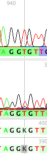
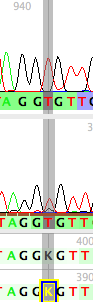
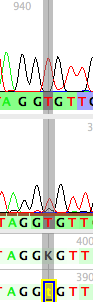
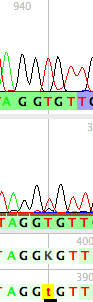
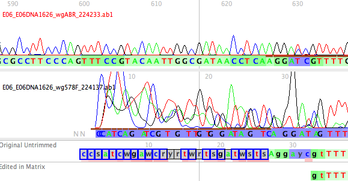
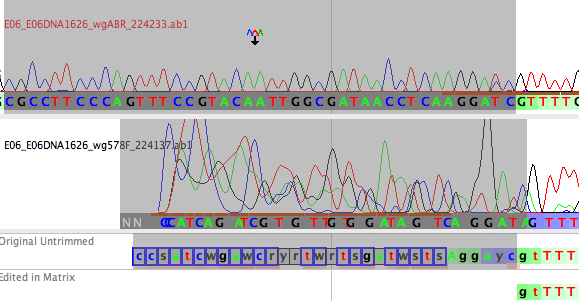
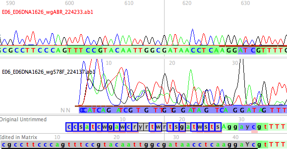
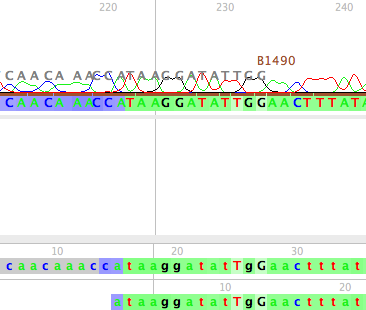
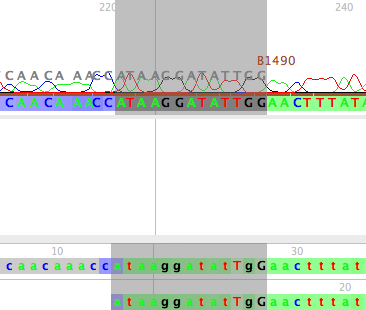
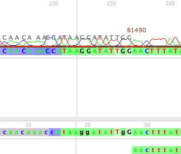

Altering calls for existing bases
If you would like to edit a base call, use the arrow tool to select the desired site in the "Edited in Matrix" sequence (at the bottom of the panel).
Type in the base you would like at that site, and the base will be changed. The corresponding character matrix will be updated with the change.
Any base that has been so edited is marked by a black bar underneath it, and the background rectangle under the base will be yellow.
   
Moving new bases from a read into the matrix
In some cases, users may wish to include sequence information from reads that was not imported by Phred/Phrap/Chromaseq. This is especially true at the ends of reads, where Phrap ignores high-quality single reads. For example, in the Chromatograms2 example from the tutorial, the start of the Bembidion antiquum IA 1626 sequence of the gene wg is truncated too much because Phrap ignored the high-quality upper read at this point:

To move the bases from that good read into the matrix, select them by touching on the first base in the read to be included, holding down the Shift key and touching on the last base to be included:

then choose the Move Read To Matrix tool (), and touch it on the read you wish to move into the matrix. The selected portion of that read will then be moved into the matrix:

Deleting bases
Occassional one will need to delete bases that have been included in the sequence by Phred/Phrap/Chromaseq. One common use of this will be to remove primer sequences from the ends of the sequences. For example, in the following contig, Phred/Phrap/Chromaseq have included the end of the B1490 primer, which was used to generate the read shown on top.

You can see the B1490 primer's sequence written just over the peaks. Instructions for seeing primer sites is shown on the Displaying Primer Sites page.
To remove those bases from the sequence in the editor, select the bases to be deleted by touching on the first base to be deleted, holding down the Shift key, and touching on the last base to be deleted:

Then, after choosing Convert Selected to Gaps from the Chromatograms menu, the bases are deleted from the sequence in the matrix:

Inserting bases
You can insert new (blank) bases in to your sequence (which you can then later edit to bases) using the Insert Gap tool:
Touch the tool on the Edited in Matrix sequence to insert the gap.
Marking bases for later alteration
The thumbs up, thumbs down, and !eye tools:
permit you to mark bases graphically; they have no effect directly on the data. For instance, you can use the thumbs down tool to mark red those poor-quality sequence portions you intend to delete, and the !eye tool to mark pink those sections that need further examination. You can remove the colors with the thumbs up tool. We often mark all the sections to be deleted red, and then in the matrix editor use the magic wand tool, after using its drop-down menu to indicate Select By Color, to select all red cells. Then, using the paint tool, all can be deleted at once by changing to "-".